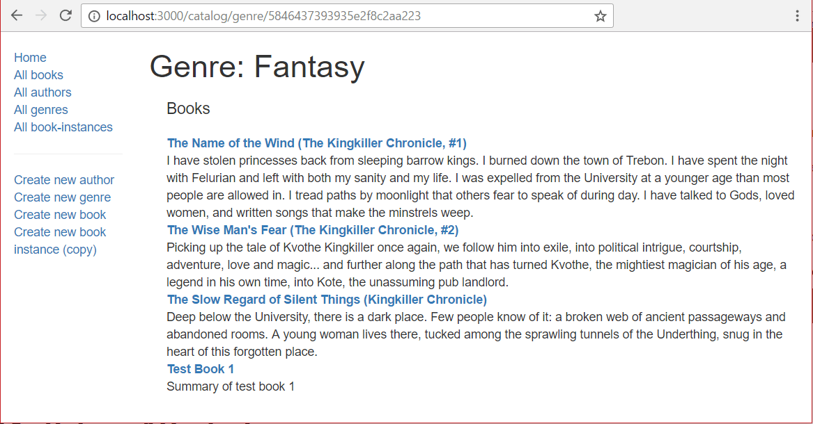

The genre detail page needs to display the information for a particular genre instance, using its automatically generated _id field value as the identifier. The page should display the genre name and a list of all books in the genre with links to each book's details page.
Open /controllers/genreController.js and import the async and Book modules at the top of the file.
var Book = require('../models/book');
var async = require('async');
Find the exported genre_detail() controller method and replace it with the following code.
// Display detail page for a specific Genre.
exports.genre_detail = function(req, res, next) {
async.parallel({
genre: function(callback) {
Genre.findById(req.params.id)
.exec(callback);
},
genre_books: function(callback) {
Book.find({ 'genre': req.params.id })
.exec(callback);
},
}, function(err, results) {
if (err) { return next(err); }
if (results.genre==null) { // No results.
var err = new Error('Genre not found');
err.status = 404;
return next(err);
}
// Successful, so render
res.render('genre_detail', { title: 'Genre Detail', genre: results.genre, genre_books: results.genre_books } );
});
};
The method uses async.parallel() to query the genre name and its associated books in parallel, with the callback rendering the page when (if) both requests complete successfully.
The ID of the required genre record is encoded at the end of the URL and extracted automatically based on the route definition (/genre/:id). The ID is accessed within the controller via the request parameters: req.params.id. It is used in Genre.findById() to get the current genre. It is also used to get all Book objects that have the genre ID in their genre field: Book.find({ 'genre': req.params.id }).
Note: If the genre does not exist in the database (i.e. it may have been deleted) then findById() will return successfully with no results. In this case we want to display a "not found" page, so we create an Error object and pass it to the next middleware function in the chain.
if (results.genre==null) { // No results.
var err = new Error('Genre not found');
err.status = 404;
return next(err);
}
The message will then propagate through to our error handling code (this was set up when we generated the app skeleton - for more information see Handling Errors).
The rendered view is genre_detail and it is passed variables for the title, genre and the list of books in this genre (genre_books).
Create /views/genre_detail.pug and fill it with the text below:
extends layout
block content
h1 Genre: #{genre.name}
div(style='margin-left:20px;margin-top:20px')
h4 Books
dl
each book in genre_books
dt
a(href=book.url) #{book.title}
dd #{book.summary}
else
p This genre has no books
The view is very similar to all our other templates. The main difference is that we don't use the title passed in for the first heading (though it is used in the underlying layout.pug template to set the page title).
Run the application and open your browser to http://localhost:3000/. Select the All genres link, then select one of the genres (e.g. "Fantasy"). If everything is set up correctly, your page should look something like the following screenshot.

You might get an error similar to this:
Cast to ObjectId failed for value " 59347139895ea23f9430ecbb" at path "_id" for model "Genre"
This is a mongoose error coming from the req.params.id. To solve this problem, first you need to require mongoose on the genreController.js page like this:
var mongoose = require('mongoose');
Then use mongoose.Types.ObjectId() to convert the id to a type that can be used. For example:
exports.genre_detail = function(req, res, next) {
var id = mongoose.Types.ObjectId(req.params.id);
...